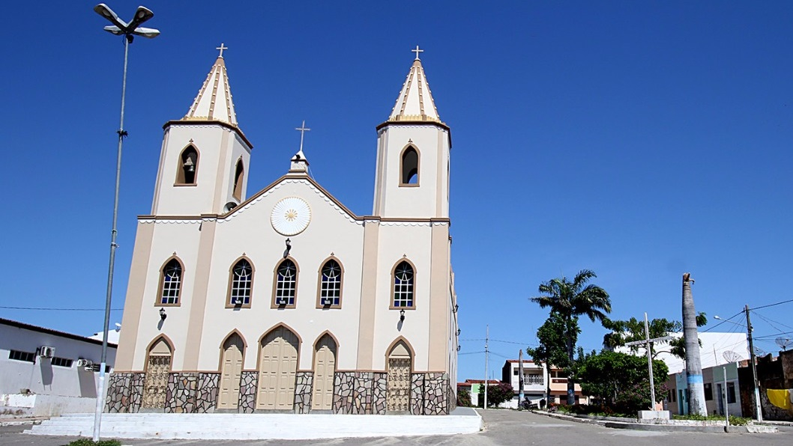

Cedro de São João
História
Cedro formou-se de ciganos vindos de Minas Gerais. Depois de passarem pela Bahia e entrarem em Sergipe, um pequeno grupo se separou e foi viver em barracas armadas em Capela, comercializando produtos do Vale do Japaratuba (açúcar e mel) e do Vale do São Francisco (arroz, animais e peixe).
O grupo adquiria animais na fazenda Cemitério (hoje Aquidabã), e com esses animais descansavam em um terreno, onde hoje é a Praça Jonas Trindade, em Cedro. Na época da cheia do rio São Francisco, as terras rodeadas pelas águas, formavam quase uma ilha. Como se tratava de um lugar seguro, o líder do grupo Antônio Nunes, construiu um curral com a madeira Cedro.
Na Fazenda Cedro, nome originado de madeira abundante na região, existia em 1834 vinte casas de taipa, construídas para os vaqueiros. Pela Lei Provincial de 5 de março de 1835, o proprietário da Fazenda, Antônio Nunes, criou uma escola, posteriormente fechada, e que voltou a funcionar em 9 de Julho de 1872, sob a direção da professora Carolina Leopoldina Regina de Sá. A construção da capela de São João Batista, atual Matriz, tornou independente a povoação, da Freguesia de Santo Antônio de Propriá. A Lei Estadual nº 83, de 23 de Outubro de 1894 elevou o Povoado à categoria de Vila.
A partir do ano de 1894, passou a haver uma organização para separação política de Propriá. Surgiram três engenhos no Vale do rio jacaré: Imbira, de Antônio Santana; Poço dos Bois, de Antônio Soares, e o da Lagoa Seca de Antônio Baptista Nascimento, que colaboraram na formação da estrutura econômica.
Em 29 de outubro de 1901, Cedro retornou à condição de Povoado, pela Lei nº 422. Pouco depois, iniciava-se um movimento pela restauração do Município, tendo como principais líderes, Antônio Batista do Nascimento, João de Deus da Rocha, Manoel da Rocha e Antônio Santana. Atualmente, o município pertence judicialmente a sua própria comarca, formado pelos povoados Bananeiras, Batinga, Piçarreira, Cruzes e Poço dos Bois.
fonte: https://www.cedrodesaojoao.se.gov.br/Pontos Turísticos
Lagoa Salomé
Esse corpo hídrico conta com limitado aporte de água que o torna fragilizado, atualmente se encontra impactado em função do descarte de efluentes de origem doméstica principalmente, e pela retirada da vegetação do entorno e pelo lançamento de resíduos sólidos.
Praça Jonas Trindade
A Praça Jonas Trindade está localizada no bairro de Centro. Com mais de 1779 domicílios, a Praça Jonas Trindade caracteriza-se por 37,10% de domicílios constituídos de casas, sobrados ou similares e 62,90% de edifícios de apartamentos ou conjuntos residenciais com vários domicílios de famílias distintas.
Dados Gerais de acordo com o IBGE
| Prefeito (a) | Layana Soares da Costa |
| Vice-Prefeito (a) | Luiz Delfino de Souza Júnior |
| Site do município | https://www.cedrodesaojoao.se.gov.br/ |
| Área territorial | 83,711 km² |
| População estimada | 5.929 pessoas |
| Densidade demográfica | 67,29 hab/km² |
| IDHM | 0,623 |
| PIB per capita | R$ 10.134,06 |